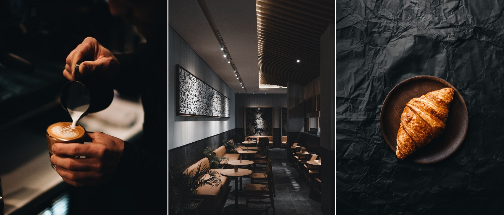
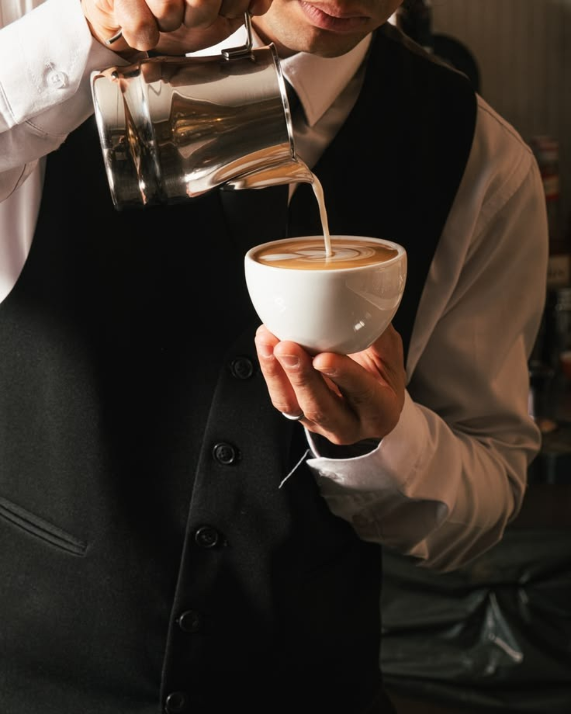
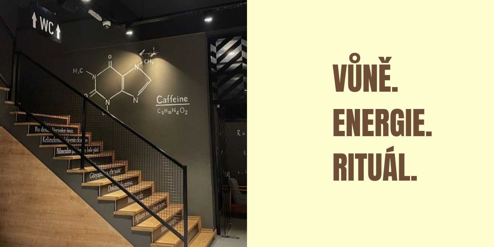
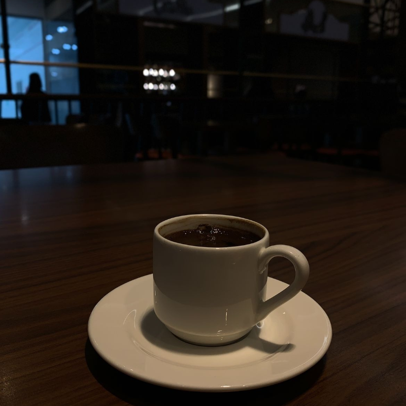
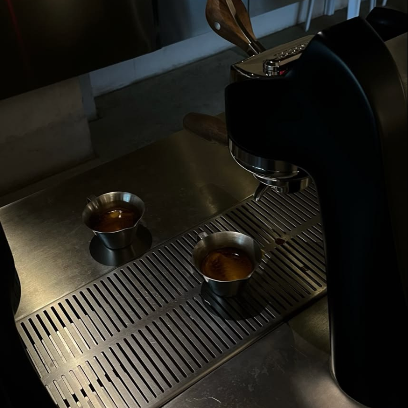
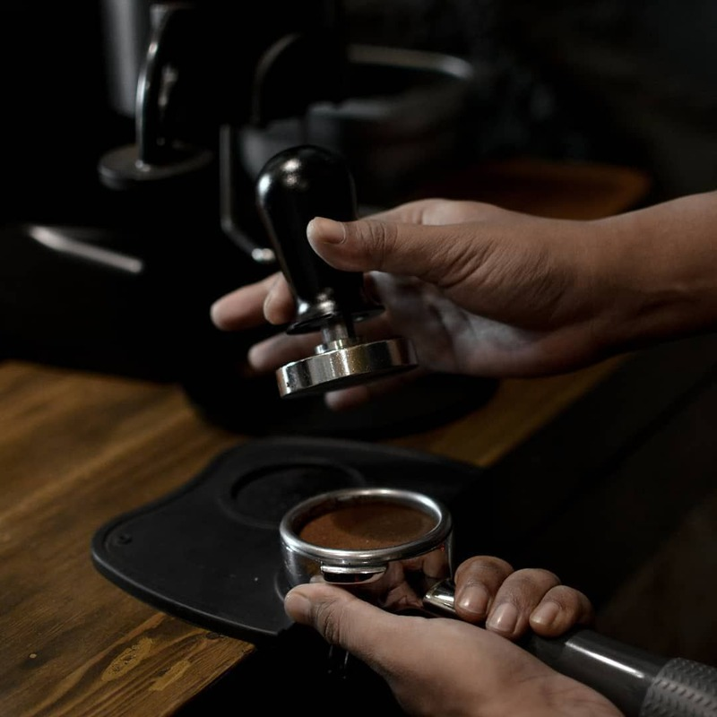
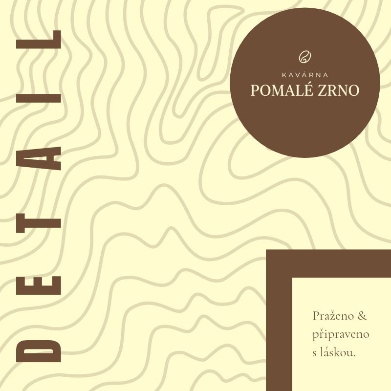

Kavárna Pomalé Zrno
Vlastní pražená káva, domácí zákusky a stůl u okna. Zrnová 12, Praha 1.
Malá kavárna, kde se nespěchá
Začínali jsme se dvěma stoly a jedním starým pákovým strojem. Dnes máme stolů šest, stroj pořád ten samý a zrno od pražírny, kterou známe jménem.
Kávu připravujeme tak, jak chutná nejlépe. Zákusky a koláče pečeme každé ráno u nás v kuchyni, takže co se vyprodá, to už není.

Z naší kavárny




